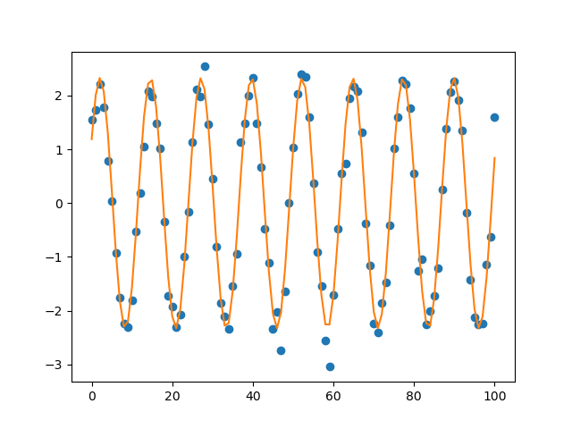

Note
Click here to download the full example code
doc_model_loadmodel.py¶
Out:
[[Model]]
Model(mysine)
[[Fit Statistics]]
# fitting method = leastsq
# function evals = 21
# data points = 101
# variables = 3
chi-square = 7.68903767
reduced chi-square = 0.07845957
Akaike info crit = -254.107813
Bayesian info crit = -246.262452
[[Variables]]
amp: 2.32733714 +/- 0.03950803 (1.70%) (init = 3)
freq: 0.50098755 +/- 5.7726e-04 (0.12%) (init = 0.52)
shift: 0.53604521 +/- 0.03383118 (6.31%) (init = 0)
[[Correlations]] (unreported correlations are < 0.100)
C(freq, shift) = -0.866
##
import warnings
warnings.filterwarnings("ignore")
##
# <examples/doc_model_loadmodel.py>
import matplotlib.pyplot as plt
import numpy as np
from lmfit.model import load_model
def mysine(x, amp, freq, shift):
return amp * np.sin(x*freq + shift)
data = np.loadtxt('sinedata.dat')
x = data[:, 0]
y = data[:, 1]
model = load_model('sinemodel.sav', funcdefs={'mysine': mysine})
params = model.make_params(amp=3, freq=0.52, shift=0)
params['shift'].max = 1
params['shift'].min = -1
params['amp'].min = 0.0
result = model.fit(y, params, x=x)
print(result.fit_report())
plt.plot(x, y, 'bo')
plt.plot(x, result.best_fit, 'r-')
plt.show()
# <end examples/doc_model_loadmodel.py>
Total running time of the script: ( 0 minutes 0.080 seconds)